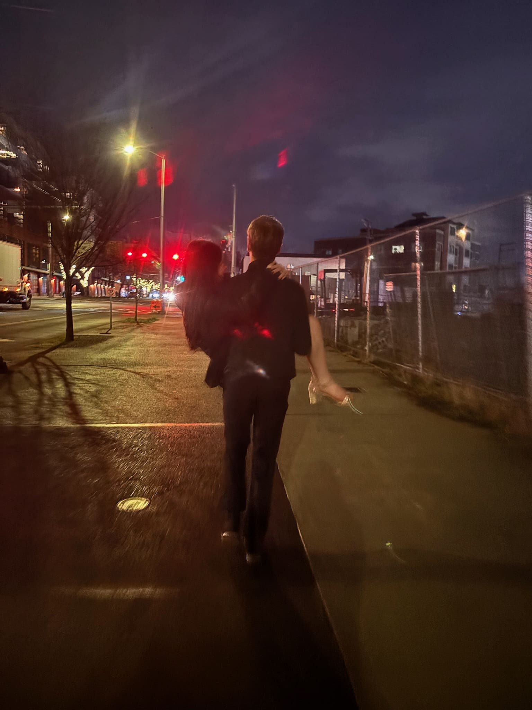
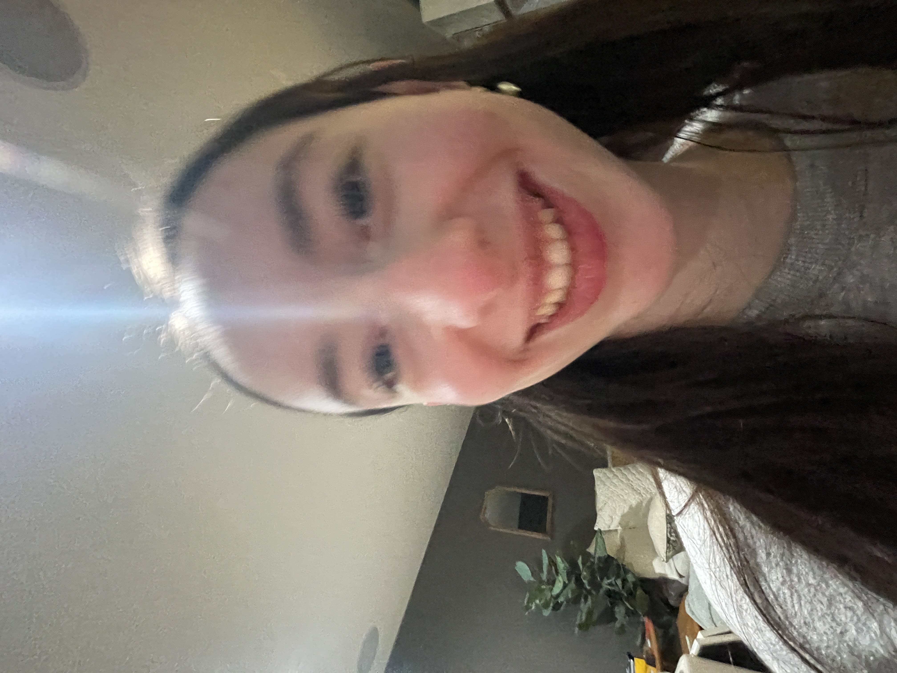
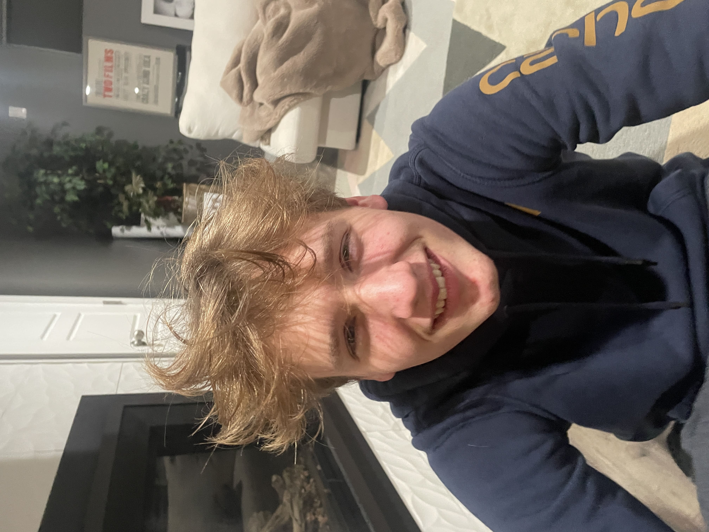
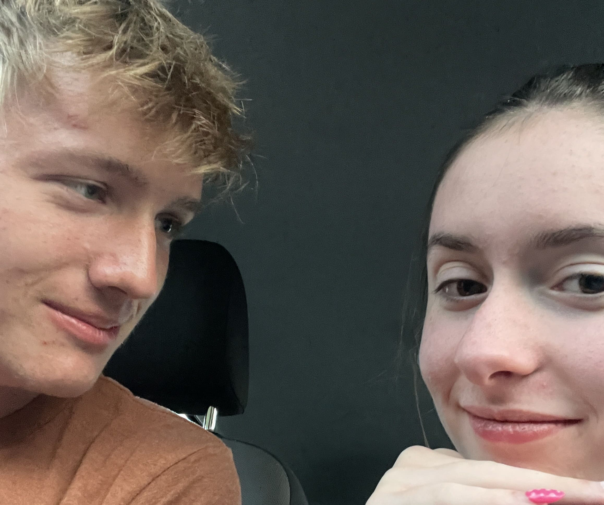

Eden
and
Caden
The 1 Year Anniversary Experience
Scroll to Begin
July


We had been talking for about 3 months at this point. Oops. I was really really really nervous becuase I knew I wanted to start dating but at the same time I didn't want anything to change about us. But thankfully I FINALLY asked you and everything that happened since then is a million times more incredible than I ever could have imagined. Now I always just wish I had asked you sooner.
August


We were hanging out more and getting more comfortable, when I wasn't out of town. You met Shelton, I met Spencer and Gina and your other friends. We went on the boat and it was wonderful save for my bowl cut and the fact that I forgot about our one month anniversary. Never again. But you wrote me a sweet card and everything and I so appreciated it.
September


Also filled with fun adventures, but limited a little by school. I remember our double date with Maxton and Evie! And us going to the fair together. Also of course our little adventure where the car battery died in the El Camion parking lot. We got to hang out on the weekend at least once which was a welcome break. Also swim season started! I'm not sure if I got to see a meet at this point, but I was really excited for you every time you had a race.
October


HOCO! And a lot of other fun stuff too of course. But this was my first dance with you and it was just the best ever. These flicks are still some of my favorites of us. I remember being super duper nervous to ask you but also very excited to see you swim! Also seeing you in the little theater during cyclone rehearsals totally kept me going. I loved saying hi afterwards. And I love our matching photo too. Nice abs.
November


One of my favorite hangouts was in November! The face masks were very very fun. Also I think this is when I came to watch you compete in metros and I was so so proud of you. I am also really grateful because you came to so many frisbee games during the fall season and you were just the sweetest and most supportive person ever when it came to our cyclone performances. I especially enjoyed getting to hang out with you afterwards.
December


At least in my top 3 fav photos of all time. And the painting you made of it is just perfect. Also I remember really enjoying seeing Elf with you and your parents. That was one of the first times I got to talk to them for a while and it was great. Also our first kiss! I finally manned up a little. I was sad we couldn't spend Christmas or New Year's together though.
January




Winter Formal. Pretty fun double date with Audrey and Marsden and also a few of my fav photos. And Shakespeare In Love. You were amazing in this and I was again just so so incredibly proud. This was our 6 months too! The gift box you made me was the most amazing and thoughtful thing EVER.
February



Somehow there are no photos of us in February. But it was Valentine's Day! Your gifts were again incredible and I tried my best to keep up. You performed in Legally Blonde! The parts where you were on stage were excellent. At this point we had started working on Little Mermaid too. It was really nice to finally be in the same show so we could see each other more.
March


I loooved March. Conan concert was just incredible and I am so glad you invited me. Hiking trip with a bunch of theater kids too which was awesome except for that your knee was hurting. And the big band dance! Which was mostly very fun and then very serious in your car and then very important and I am just glad the whole thing happened.
April


Eden's birthday!!! I still wish I had made you more stuff but at the very least we had a good time getting food and hanging out. Thank you for forcing me to get all dolled up cause this first photo is a gem. And I loved our little photoshoot in the woods. You look so whimsical in all of them but this is my favorite by far.
May


May was lovely. Except for school. But hanging out with you was such a nice break from all of it. May 24th and 25th were SO fun. We had a lot of big plans and we had some nice little side quests to go along with them. Thrifting was great. Also we had a bunch of Little Mermaid shows and you killed it. It was busy and crazy but you made it all a whole lot better.
June


Yay IDAs! And also finally the end of the school year. I really loved performing with you. And watching you perform the number from Six! Super good. The day we built your bed was also one of my most favorite times we've ever hung out. I was really happy I could help out and I was glad we got some time to relax afterwards. Also you are so cute in glasses.
July


Summer with you has been amazing so far! Definitely we need to hang out more and also go to the beach again cause that was really nice. Thank you for being your wonderful self and bringing immeasurable amounts of joy into my life. I love you to the moon and back over and over and over again and I can't wait for whatever's next.